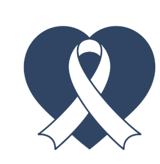

โดย นักเรียนโรงเรียนสวนกุหลาบวิทยาลัย นนทบุรี


ติดต่อเรา
|  | การศึกษาสารยับยั้งโรคมะเร็งและให้กำลังใจผู้ป่วย โดย นักเรียนโรงเรียนสวนกุหลาบวิทยาลัย นนทบุรี |
|
|
095 - 482 - 2452 ติดต่อเรา |
|---|
เกี่ยวกับโรคมะเร็งปอด |
การเกิดโรคมะเร็งปอด |
การให้กำลังใจผู้ป่วย |
|---|
การให้กำลังใจผู้ป่วย
การต่อสู้กับโรคมะเร็งไม่ใช่เรื่องง่าย และการสร้างกำลังใจมีบทบาทสำคัญอย่างยิ่งในการสนับสนุนผู้ป่วยในช่วงเวลาที่ท้าทายนี้ บทความนี้จะสำรวจแนวทางและวิธีการในการสร้างกำลังใจให้กับผู้ป่วยมะเร็ง ซึ่งสามารถทำได้โดยผ่านการดูแลแบบประคับประคอง การส่งเสริมการเผชิญกับความเครียด การเสริมสร้างพลังอำนาจตนเอง และการมีทัศนคติที่ดีในการรับมือกับโรคนี้ได้ การดูแลแบบประคับประคองการรับรู้และการปรับตัว
การสนับสนุนจากครอบครัวและผู้ดูแลมีผลกระทบอย่างมากต่อทัศนคติของผู้ป่วย: – ทัศนคติเชิงบวก: ผู้ป่วยที่ได้รับการสนับสนุนมักจะมีมุมมองที่ดีต่อโรคและกระบวนการรักษา – การมีต้นแบบที่ประสบความสำเร็จ: ผู้ป่วยที่ได้พบกับคนที่เคยผ่านการต่อสู้และมีชีวิตยืนยาวมักจะได้รับแรงบันดาลใจในการต่อสู้
โปรแกรมส่งเสริมการเผชิญความเครียด
การศึกษาเกี่ยวกับโปรแกรมส่งเสริมการเผชิญความเครียดพบว่ามีส่วนช่วยในการลดอาการซึมเศร้าและความวิตกกังวล – การปรึกษารายบุคคล: เสนอที่ปรึกษาที่ช่วยให้คำแนะนำและแนวทางในการจัดการกับสถานการณ์ – การสนับสนุนทางโทรศัพท์: โปรแกรมที่เน้นการเสริมสร้างความสามารถในการแก้ไขปัญหาตามความเหมาะสม
การเสริมสร้างพลังอำนาจตนเอง
การเสริมสร้างพลังอำนาจตนเองทำให้ผู้ป่วยรู้สึกมีอำนาจในการจัดการกับความเจ็บป่วยของตนเอง: – การดูแลตนเอง: ส่งเสริมให้ผู้ป่วยมีส่วนร่วมในการดูแลสุขภาพของตนเอง – การสนับสนุนจากครอบครัวและสังคม: เสริมสร้างความผาสุกในชีวิตประจำวัน
ทัศนคติและปฏิกิริยาต่อโรค
การสนับสนุนที่ดี: การสร้างบรรยากาศแห่งความเข้าใจและการสนับสนุนภายในครอบครัวช่วยให้ผู้ป่วยรู้สึกเป็นที่รัก – การให้ข้อมูลที่เชื่อถือได้: แบ่งปันข้อมูลที่ถูกต้องเพื่อให้ผู้ป่วยรู้สึกมีความมั่นใจและสามารถตัดสินใจได้